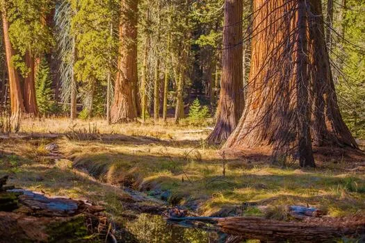
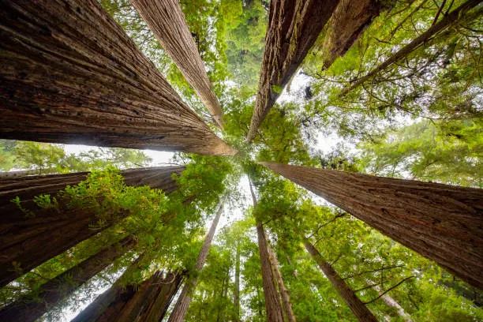

KNOBE · The Digital Arboretum
The Sequoia Grove
A grove of giant sequoias has been keeping records for two thousand years. Choose how you would like to walk through it — and leave carrying a seed of your own.
3D · Walkable

The Walkable Grove
Immersive · First person
Step inside a living 3D grove. Walk among towering sequoias, follow the golden footpath from tree to tree, and reflect at each one — an experience built to be felt, not just read.
WASD to walk
Glowing waypoints
Footpath guide
Enter the grove →
Narrated · Scroll

The Guided Walkthrough
Cinematic · Scroll-paced
The classic narrated journey. Move layer by layer — bark, sapwood, heartwood, roots, cone — through full-screen chapters, photography, and music, answering each question as the story unfolds.
Scroll to advance
Photo & sound
Chaptered
Begin the walkthrough →
Both paths walk the same eleven layers and build the very same ✦ .knobe.md seed — a portable record of your thinking you can carry out and plant anywhere.